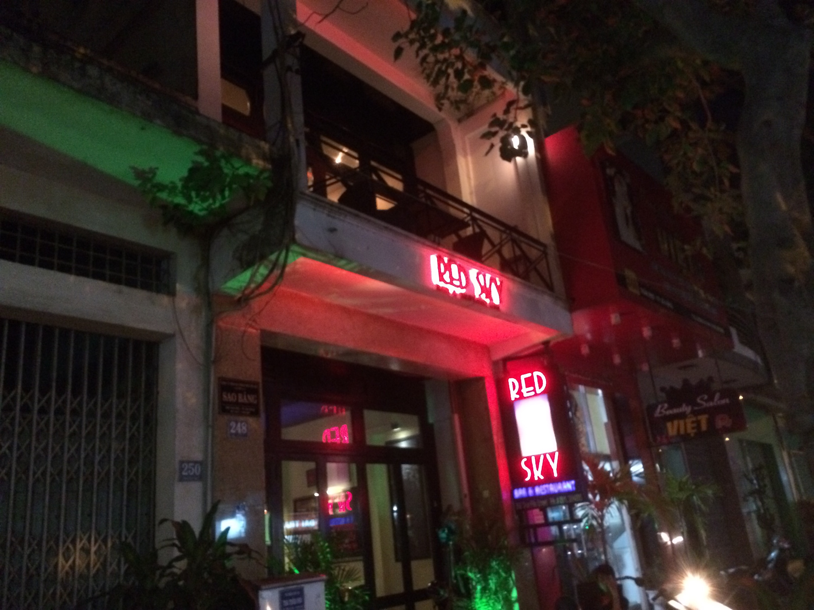
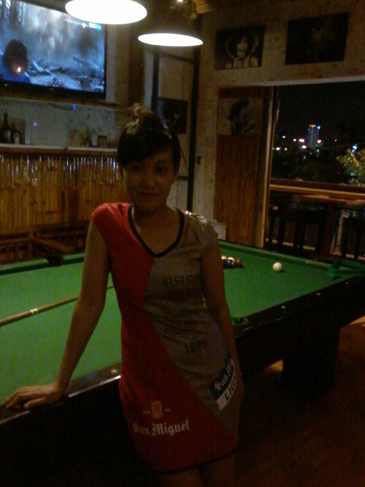
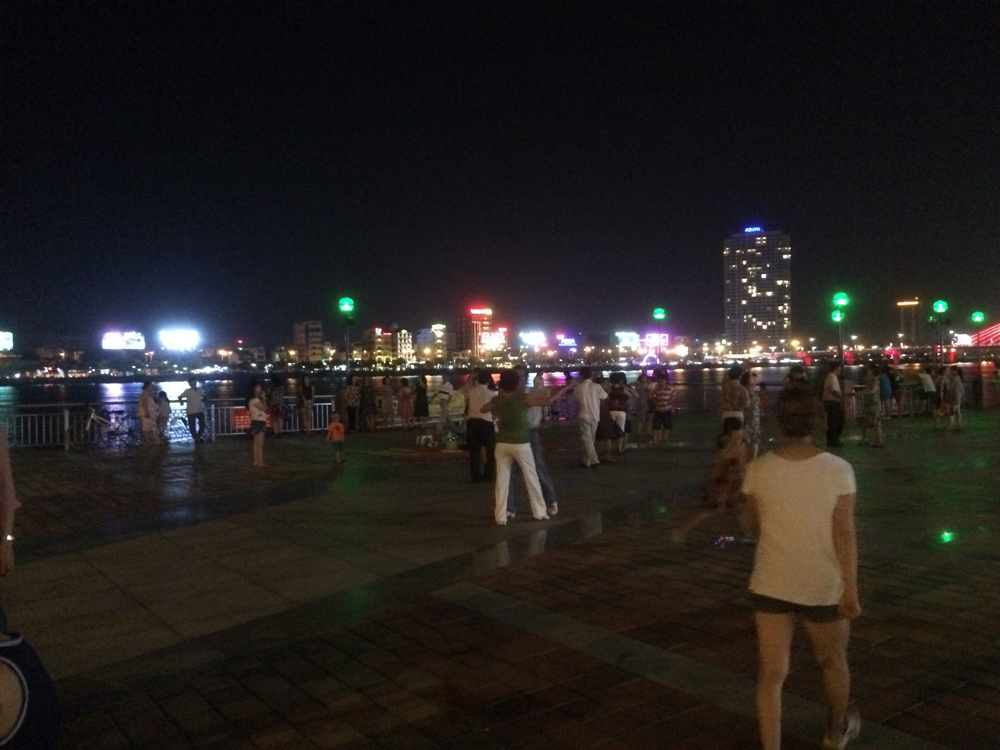
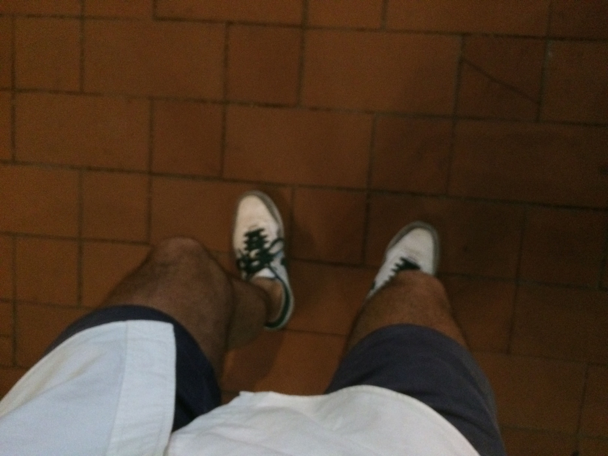
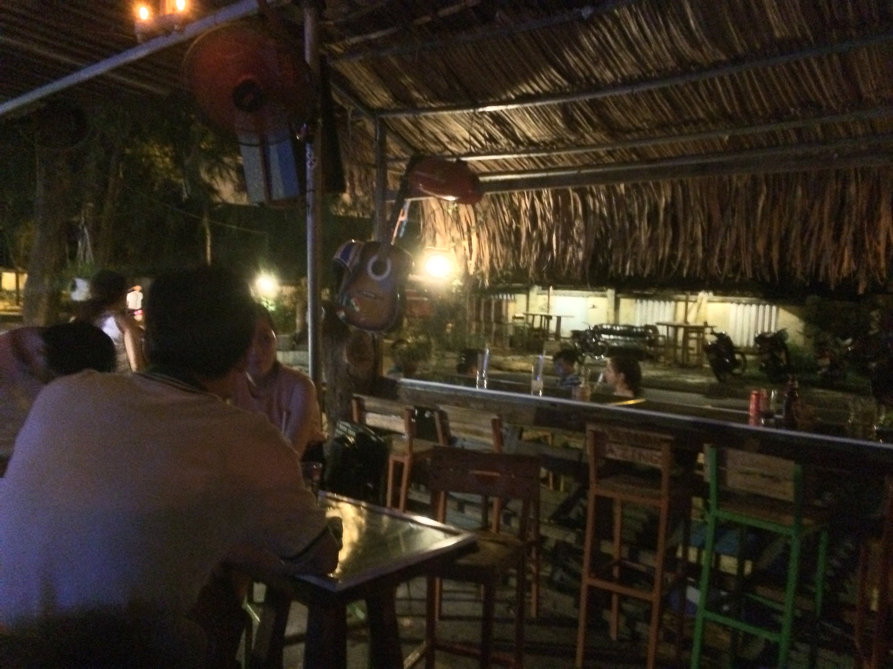
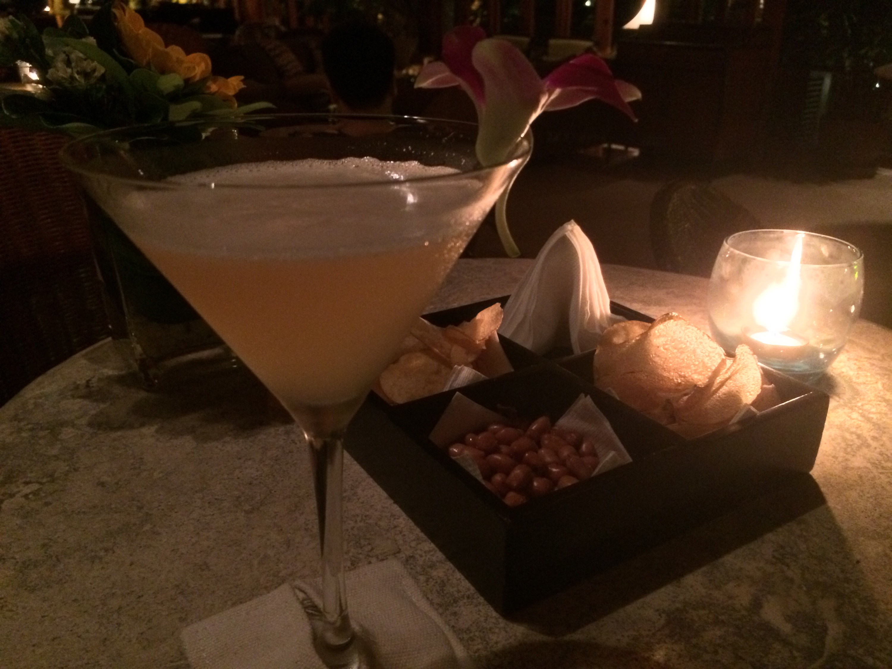

Freitagabend in Da Nang
Ok, es ist Freitagabend, der harte Arbeitsteil meines Aufenthalts in Da Nang ist größtenteils erledigt – also mache ich mich auf zu einer Bar-Hopping-Tour.
Abendessen unterwegs: Street Food entlang des Strandes (Nadine, Doreen, Hamarz, Sie kennen den Ort). Was neu ist: Bestellen ist inzwischen einfach geworden. Nicht, dass ich ein relevantes Wort Vietnamesisch spreche, aber ich habe mich daran gewöhnt, dass ich es nicht tue ;)
Dann ist es etwa 8 Uhr. Zu früh für Bars. Also entscheide ich, dass ein Haarschnitt fällig ist…

Das ist mein verrückter Friseur:

Dann trinke ich ein Bier in der Red Sky Bar.

Entweder bin ich zu früh oder die Bar ist nicht mehr angesagt: zu wenige Leute und die falschen…
Dann muss ich meine Freundin San besuchen: Sie ist ein liebenswertes vietnamesisches Mädchen, das San Miguel Bier in den Bars von Da Nang promotet. Und sie hat mir über Viber ein Bild von ihrem neuen Outfit geschickt:

Also fahren mein Bike und ich zur Bamboo Bar: eine Bar in Bach Dang, wo ältere Westler vietnamesische Mädchen aufgabeln und wo jeder Sportkanal einen Bildschirm hat. Ich trinke ein San Miguel Light und schaue Federer in Roland Garros gewinnen.
Bar-Hopping bedeutet, dass man in Bewegung bleiben muss. Nächster Halt: eine Tanzveranstaltung am Ufer des Han-Flusses.

Für diejenigen, die es kennen: wie Lido oder der Tanzclub unten im Hofbräu-Keller. Spielen mit vietnamesischen Kindern & Familien, sehr nette Atmosphäre.
Als Nächstes fahre ich zufällig an einem Ort vorbei, der ein Schild hat, das besagt, es sei ein „Biergarten“. Also muss ich anhalten – das bedeutet, das Bike zu parken (wie an jedem Ort hier).:

Wie sich herausstellt, ist ein vietnamesischer Biergarten ein anderes Konzept als ein deutscher: Es ist eher wie eine Disco, in der auch Bier serviert wird...

Denken Sie daran: DJs an angesagten Orten sind in Vietnam immer Mädchen!
Der Disco-Sound fühlt sich gut an. Warum also nicht an einen Ort gehen, den ich kenne und der gute (laute) Musik hat? Auf dem Dach des Novotel gibt es die berüchtigte SkyBar.

Also: das Bike parken, zum Aufzug gehen, der zum 57. Stock führt – „Entschuldigung, Sir, wir haben eine strikte Regel: keine Shorts“.

Pech gehabt.
Also beende ich den Abend in einem meiner „Standards“, der Minsk Bar. In der Nähe des Hotels, sehr entspannt, Reggae-Musik.

Aber da es Freitagabend ist, ist das Ende noch nicht das Ende. Zurück im Hotel, noch einen ihrer Whiskey Sours:

Während ich das tippe, habe ich drei davon getrunken und es ist nach 23:00 Uhr. Und morgen treffe ich die Jungs vom lokalen Java Developers Club. Und davor plane ich, am Strand zu schwimmen und zu laufen – also: Ab ins Bett, Till!
Auch wenn es keine Bilder gibt: Ich habe etwa 10 neue Leute kennengelernt, 50/50 Vietnamesen & Ausländer. Es ist das superkommunikative Land!